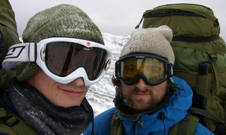

Etappe 5: Fauske (Sulitjelma) - Lønsdal
Søndag 02. November 2008 av: Montarou
Femte etappe er over og vi er like ved polarsirkelen. Det har vært en deilig uke med ekstra mat, bra vær, sympatiske dagsetapper og godt selskap. Fortsatt er det ingen andre ute i det fri. Det er fint å ha alt for oss selv, men det er synd ikke fler får førstehåndserfaring med de glassklare høstdagene uten skyer på himmelen. De er virkelig flotte.

I finværet ser man langt. Langt bakover. Det er lenge siden vi stod på Nordkapp og tok de første stegene. Og nå - utallige myrer, elver, bekker og fjell senere - nærmer vi oss halvveis. Det er en viktig milepæl!
Igjen støter vi på overstadig snille mennesker. Morten Lønner som vi møter på Damlas gatekjøkken i Fauske har bilen full av barn og sekkene våre trenger litt plass. Han kjører like godt familien hjem til Sulis, kommer tilbake og henter oss, og kjører oss godt opp på fjellplatået. Det hadde tatt størstedelen av en dag å gå de 800 høydemetrene nesten rett opp. Vi setter utrolig stor pris på denne tjenesten. Det er rart hvor hyggelige mennesker er mot oss. Det er ikke slik i hverdagen i sivilisasjonen. Det er utrolig synd. Jeg kan ikke skjønne annet enn at vennligheten skyldes de spesielle omstendighetene under en slik tur. Man er på utsiden av boksen og møter noen fra innsiden. Møtet blir spesielt og egenartet. Vi møtes under spesielle omstendigheter. Vi møtes utenfor de normale rammene for sosial omgang. Det er en fellesnevner. Dette er noe av kjernen i opplevelsene vi gjennomgår. Denne arenaen ligger ikke innenfor noen kategori der noen sosiale normer eller regler gjelder. Det finnes ingen retnings- linjer, forventninger til noen av partene. Det kan virke som fraværet av dette resultererer i at all hjelp er mye hjelp og det er også tilfelle. Kanskje får bidragsyterne en følelse av nettopp dette - at lite hjelp for dem er mye hjelp for oss, at de kan bidra med noe. Ikke det at de som hjelper oss hjelper oss "lite" - på ingen måte. Mange har hjulpet oss svært mye i en helt objektiv forstand - noe som betyr enormt mye for oss og gjennomføringen av turen.
Men tilbake til disse spesielle situasjonene og de tilhørende omstendighetene. Disse situasjonene bør oppsøkes, utforskes og oppleves! Her finner man livet slumre i sin reneste form - nakent, uforberedt og tilfeldig. Her er menneskene på sitt mest menneskelige - søkende, hjelpende og frie. Helt uten plikter. Slik blir alle initiativer gode initiativer, og ikke minst svært hyggelige og hjelpsomme og man entrer en sirkel av gode hendelser. For de kommer sjelden alene.
Henry David Thoreau snakker i "Walden" (for øvrig med undertittelen "Livet i skogene") om å trenge livet opp i et hjørne og redusere det til dets reneste form. Vi jobber med saken. Det er sikkert mange, mange flere situasjoner som er unndratt konvensjoner, krav og andre heftelser som kleber ved sivilisasjonens grep. Utfordringen er å finne dem, snuse dem opp og utforske dem, utfordre dem og snu opp ned på dem. Rulle seg rundt i dem, se seg i speilet og se hva som er annerledes. Om det synes på utsiden er en annen sak. Her ligger i hvert fall noe menneskelig, noe som ikke er et resultat av høflighet eller andre "hemninger".
Høstetappen nærmer seg slutten og jeg kan - etter snart totalt 100 turdøgn - se slutten på turlivet i denne omgang. Det er litt rart, men det blir deilig å komme hjem igjen. Nok av oppgaver venter; skole, produkttilbakemeldinger, planlegging av vinteretappen, kjøp av utstyr, nye sponsorbrev og ikke minst trening på vintertur!
<< Tilbake til Reisebrev